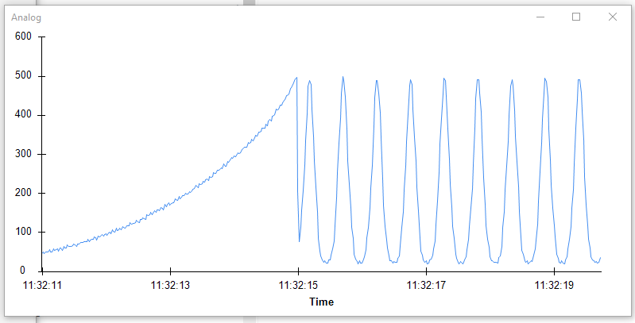

Gamma
The gamma calibration workflows can be found here.
What is gamma calibration?
Consider a pixel on your monitor. When your program tells the computer what intensity that pixel should have -- e.g. 128 in an 8-bit grayscale color range -- that number will be translated by the video card into a pattern of voltage signals to the display, which will convert them to an appropriate light intensity, e.g. 10 photons/s. Intuitively, when your program doubles that numeric intensity, you would expect that the intensity of the pixel would also double. This would be a linear system – doubling the number in your program should double the amount of light emitted by the pixel.
However, computer monitors and projectors don't quite work like this. For various reasons related to human visual perception and data compression, there are non-linearities between the numbers in your program and pixel intensity. For example, doubling the number in the program might triple the intensity of the pixel, and this might depend on the intensity you started with. When running visual neuroscience experiments we often would like to know the exact relationship between the numbers our computer program is specifying and the pixel intensity, and possibly compensate for these non-linearities when we present stimuli. This is the process of gamma calibration.
We calibrate by creating a look-up table, consisting of 256 columns and 3 rows (one for each of the monitor primary colours – red, green and blue). When we send an image to the video-card, the last thing we do is pass the image through this look-up table.
Additional info at: LearnOpenGL, Wikipedia, or here.
Using BonVision for Gamma Calibration
Hardware requirements:
You will require a light sensor and a data acquisition device
Light sensor: We have tested these scripts using two sensors –
- Open-source photodiode from Champalimaud Foundations’s Hardware Platform link
- Thorlabs amplified photodetector DISCONTINUED
Data Acquisition device: We ran our tests on an Arduino board, and a HARP board. The main requirement is that you would need to be able to read it with Bonsai (it covers most DAQs).
Testing display gamma
This workflow can be used to test the linearity of the monitor with or without the gamma correction in BonVision.
To test without the GammaCorrection, disable the GammaCorrection node in the workflow here.
Setup:
Connect the sensor to an analog channel of the DAQ and setup the
AnalogInputnode as appropriate for your DAQ by setting thePinandPortNameproperty.Place the sensor such that it is facing the monitor (or the light path if it is a projector). Make sure there are no additional light sources to the sensor.
Test:
Run the workflow!
There are a few settings you might have to play with:
- Position and size of the display window. These can be setup in the option of the CreateWindow node.
- If the measurement is noisy you can change the parameters Count and Period in the options of the BrightnessRamp node. We set it at 255 steps (steps between 0-255) with a sampling time of 0.02 seconds per step. You might have to increase the sampling time depending on the temporal characteristics of the sensor and display. To reduce the total time taken to run the test, you can reduce the number of steps. E.g. For one of our 60Hz projector we used 20 steps sampled at 1s per step, to be confident of the measurements.
- You might have to reduce the spatial frequency of the DrawGrating node depending on the size of the display and sensor.
Below is an example of the measurement made for a monitor. Note there is a curve (rather than line) on the left, and the sine wave has peaks sharper than the troughs.

Making the monitor linear
Option 1 (Preferred) – go with the hardware
The hardware of most modern displays is typically linear (such as in LCD or LED displays). However, a gamma non-linearity is incorporated into the output to allow representing the full human perceptual range with just 8-bits for each color. Therefore displayed images will ‘look nice’ even with just 256 light levels.
This gamma curve is incorporated at multiple levels, mainly in the settings of the physical display (every monitor is different) and in the OS (graphics card driver). In Windows 10, the OS settings can be calibrated using the Calibrate Display Colour app from the start menu. Move through the steps and max out the correction (it’ll make the monitor look brighter and greyer. Re-run the test with those settings to check if this made the display linear. If not, continue to option 2.
Option 2 – use BonVision to Calibrate
There are two workflows: GammaCalibration_Fit & GammaCalibration_FitGray. Follow steps similar to those above in Testing the Display to run these scripts. The look-up image is saved where specified in the FileName parameter of the SaveImage node. You can edit the CreateGammaLookup.cs in the Extensions folder within to have a different fitting if you prefer.
Note: In case the BrightnessRamp node shows an error and is red, you might have to hit Reload Extensions in Bonsai, which is the rightmost icon on top.